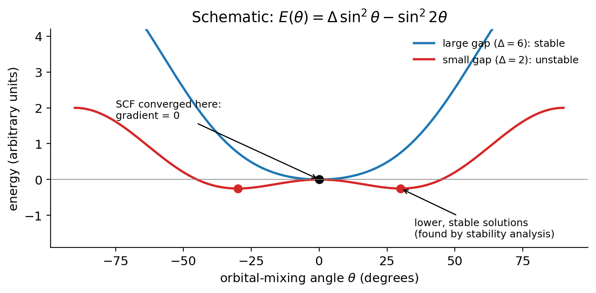

Class 12 · SCF stability, open shells and transition metals
Debrief of Experiment 7 and introduction to Experiment 8
After this class you should be able to:
- tell grid noise from physics in a potential energy curve, and choose a grid for a given functional;
- explain why a converged SCF solution is a stationary point that may not be a minimum;
- define the electronic Hessian and say what a negative eigenvalue means;
- distinguish internal from external (restricted → unrestricted, real → complex) instabilities;
- compute the exact ⟨S²⟩ for a spin state and judge spin contamination in an unrestricted calculation;
- explain why transition-metal atoms have many low-lying states, and what an effective core potential does;
- plan Experiment 8.
This class may take two meetings. If it does, the natural split point is just before Section 3.2: the first meeting covers the Experiment 7 debrief, SCF stability and spin contamination, the second covers transition metals, effective core potentials and the Experiment 8 briefing.
1 Part 1 · Looking back at Experiment 7
This part discusses the trends you most likely saw in Experiment 7. Your curves may differ in the details, and a classmate’s may too. What matters is how to read them.
1.1 Wiggles are grid noise, not physics
The reference Ar₂ curve has one minimum. Most of you probably found curves with two, three or more minima, especially on SG-1. Those extra minima are not chemistry. Argon atoms do not have several preferred distances. As Class 11 explained, the grid moves with the atoms, so the integration error changes erratically from one distance to the next. The binding energy is only 0.28 kcal/mol, or 4.5 × 10⁻⁴ \(E_h\), so an integration error of a few 10⁻⁵ \(E_h\) is enough to draw a new minimum.
Two simple tests separate noise from physics:
- Does the feature survive a finer grid? A physical minimum stays where it is when you go from SG-2 to SG-3. A grid artifact moves, shrinks or disappears.
- Does it make physical sense? A real potential between two closed-shell atoms has one well. Several minima a few tenths of an ångström apart are a red flag.
The max Δ vs SG-3 column of the wiggle report measures the first test. It compares each curve with the same functional on the finest grid, without using the reference, so it measures grid convergence alone.
1.2 Which functionals needed the finest grid?
The typical pattern, which you probably reproduced:
- SG-1 is too coarse for this problem for almost everyone. Even B3LYP may show small ripples at SG-1 on a scale of 0.1 kcal/mol, invisible in ordinary reaction energies but obvious here.
- The meta-GGAs M06-L and M11-L and the hybrid meta-GGA M11 were usually the most sensitive. Their curves often still had spurious minima at SG-2, and sometimes small irregularities even at SG-3. This matches what Wheeler and Houk (Wheeler and Houk 2010) and Mardirossian and Head-Gordon (Mardirossian and Head-Gordon 2016b) reported for Minnesota functionals.
- ωB97M-V is also a meta-GGA, but it was designed with smoothness in mind (Mardirossian and Head-Gordon 2016a). It usually converges by SG-2.
- B3LYP converges quickly with the grid, because a GGA hybrid has a smooth integrand.
1.3 Grid convergence is not accuracy
Now look at the shape of the converged curves. B3LYP has no dispersion, and argon is held together only by dispersion. On a converged grid, B3LYP’s curve is probably repulsive at every distance, or nearly so. Any “well” it showed on SG-1 was made by the grid. Some Minnesota functionals bind Ar₂ only weakly on a converged grid. ωB97M-V includes VV10 nonlocal correlation and usually has a well of about the right depth. A smooth curve tells you the grid is good enough. It does not tell you the functional is right.
1.4 What the grid costs
| Grid | SG-1 | SG-2 | SG-3 |
|---|---|---|---|
| Points for a carbon atom | ≈ 3,800 | ≈ 7,800 | ≈ 17,700 |
The timing chart probably surprised some of you: going from SG-1 to SG-3 multiplies the number of grid points by more than four (Table 1), but the total wall time grows much less. Only the exchange–correlation part of each SCF cycle scales with the number of points. Compared with the effect of a larger basis set (Experiment 1), a finer grid is cheap insurance.
1.5 Recommendations
- Use at least SG-2 for meta-GGAs, and SG-3 or (99,590) for Minnesota functionals and other heavily parametrized ones. SG-1 is acceptable for GGAs and GGA hybrids in ordinary reaction energies, but not for weak interactions or frequencies.
- Use the same grid for every species in a reaction.
- Report the grid in every methods section, by name or as \((n_r, n_\Omega)\).
- Hartree–Fock has no grid problem. If you answered question 7 with “no, because HF exchange is computed analytically”, you were right.
2 Part 2 · Is the SCF solution the right one?
2.1 The SCF finds stationary points
In Class 4 you saw the SCF loop: guess orbitals, build the Fock (or Kohn–Sham) matrix, diagonalize, repeat until nothing changes (see Class 4). When it stops, the energy no longer changes to first order when you mix occupied and virtual orbitals. That is a statement about the gradient. It says nothing about the curvature.
To make this precise, write any small change of the occupied orbitals as a rotation that mixes occupied orbital \(i\) with virtual orbital \(a\) by an amount \(\kappa_{ai}\):
\[ \phi_i \;\rightarrow\; \phi_i + \sum_a \kappa_{ai}\,\phi_a + \dots \]
The energy is a function of all the rotation parameters \(\boldsymbol{\kappa}\). Expanded around the converged solution,
\[ E(\boldsymbol{\kappa}) = E_0 + \mathbf{g}^{\mathsf{T}}\boldsymbol{\kappa} + \tfrac{1}{2}\,\boldsymbol{\kappa}^{\mathsf{T}}\mathbf{H}\,\boldsymbol{\kappa} + \dots \]
The SCF convergence criterion is \(\mathbf{g} = 0\) (the off-diagonal occupied–virtual block of the Fock matrix vanishes; this is Brillouin’s theorem). A point with zero gradient is a stationary point. It can be
- a minimum: all eigenvalues of \(\mathbf{H}\) positive;
- a saddle point: some eigenvalues negative;
- a maximum: all eigenvalues negative (rare in practice).
The matrix \(\mathbf{H}\) of second derivatives of the energy with respect to orbital rotations is the electronic Hessian (or orbital Hessian). Note what is being differentiated: the energy, with respect to orbital rotations. This is not the nuclear Hessian you use for vibrational frequencies.
2.2 A picture of an unstable solution
Figure 1 shows the toy model used by the stability-landscape widget of Experiment 8. One angle \(\theta\) mixes two orbitals, and the energy is
\[ E(\theta) = \Delta\,\sin^2\theta - \sin^2 2\theta. \]
At \(\theta = 0\) the gradient is zero for every value of \(\Delta\), so an SCF can converge there. The curvature is \(E''(0) = 2\Delta - 8\). For a large gap (\(\Delta > 4\)) the curvature is positive and \(\theta = 0\) is a minimum. For a small gap (\(\Delta < 4\)) it is negative: \(\theta = 0\) is a maximum along this direction, and lower solutions exist at \(\cos 2\theta^{*} = \Delta/4\).

For \(\Delta = 2\), \(E''(0) = 2(2) - 8 = -4 < 0\), so the converged point is unstable. The lower solutions satisfy \(\cos 2\theta^{*} = 2/4 = 0.5\), so \(2\theta^{*} = 60^\circ\) and \(\theta^{*} = 30^\circ\). Their energy is
\[ E(30^\circ) = 2\sin^2 30^\circ - \sin^2 60^\circ = 2(0.25) - 0.75 = -0.25, \]
below the converged value \(E(0) = 0\). For \(\Delta = 6\), \(E''(0) = +4\) and there is nothing to fix. The crossover is at \(\Delta = 4\), where the curvature changes sign. Small gaps between states make instabilities likely.
2.3 The electronic Hessian
For a real, closed-shell Hartree–Fock determinant, the Hessian has a simple block structure built from two matrices (Čı́žek and Paldus 1967; Seeger and Pople 1977):
\[ A_{ia,jb} = (\varepsilon_a - \varepsilon_i)\,\delta_{ij}\,\delta_{ab} + \langle aj \| ib \rangle, \qquad B_{ia,jb} = \langle ab \| ij \rangle, \]
where \(i, j\) label occupied orbitals, \(a, b\) virtual orbitals, \(\varepsilon\) orbital energies and \(\langle pq\|rs\rangle\) antisymmetrized two-electron integrals. The solution is stable with respect to real rotations if \(\mathbf{A} + \mathbf{B}\) has no negative eigenvalues, and with respect to complex rotations if \(\mathbf{A} - \mathbf{B}\) has none. In Kohn–Sham DFT the same structure holds, with the exchange–correlation kernel (the second derivative of \(E_\mathrm{xc}\)) added to the two-electron terms.
Two remarks help the intuition:
- The first term is the orbital-energy gap \(\varepsilon_a - \varepsilon_i\). A large HOMO–LUMO gap makes the diagonal large and positive, and the solution is almost certainly stable. Small gaps are where trouble lives.
- \(\mathbf{A}\) and \(\mathbf{B}\) are the same matrices that appear in time-dependent HF and DFT for excitation energies. A negative eigenvalue of the Hessian corresponds to a “negative excitation energy”: there is a state of the same kind below the one you converged to.
2.4 Internal and external instabilities
Every SCF calculation works within constraints: restricted or unrestricted spin orbitals, real or complex coefficients. These form a hierarchy (Seeger and Pople 1977; Fukutome 1981):
\[ \text{RHF} \subset \text{UHF} \subset \text{GHF}, \qquad \text{real} \subset \text{complex}. \]
- An internal instability means a lower solution exists within the same constraints: for example, a UHF (or UKS) solution that can lower its energy by rotating to a different UHF solution. This is the typical case for open-shell atoms that converged to the wrong occupation of their d orbitals.
- An external instability means a lower solution exists only if you relax a constraint. The classic example is a restricted solution with a lower unrestricted solution (an RHF → UHF, or triplet, instability). Stretch H₂ and the RHF solution, stable near equilibrium, becomes externally unstable past the Coulson–Fischer point (roughly 1.2 Å for HF). From there on, UHF lets the two electrons localize on separate atoms and gives a lower energy.
A stability analysis computes the lowest eigenvalues of the Hessian. If one is negative, the program rotates the orbitals along the corresponding eigenvector, which is downhill by construction, converges the SCF again from there, and checks the new solution. It repeats until all eigenvalues are non-negative (Bauernschmitt and Ahlrichs 1996).
2.5 Stability analysis in Q-Chem
In Q-Chem, add one line to the $rem section:
INTERNAL_STABILITY TRUEAfter the SCF converges, Q-Chem checks for internal instabilities. If it finds one, it follows it, reconverges and checks again, and the output reports what it found and the new energy. The energy after a successful stability analysis can only be equal to or lower than the energy without it. Q-Chem (Epifanovsky et al. 2021) has separate options for external (restricted → unrestricted) checks; the manual describes them. In this course the open-shell atoms already use unrestricted orbitals, so internal stability is what matters.
A stability analysis costs extra time, usually a few times the cost of the SCF itself, because finding the lowest Hessian eigenvalues requires work similar to a few excited-state calculations. For a small molecule that is nothing. For a large one, run the analysis on the final geometry at least.
- “It converged, so it’s right.” Convergence means \(\mathbf{g} = 0\), nothing more.
- Comparing energies from different solutions. If one state of a reaction was stabilized and the other wasn’t, the reaction energy mixes two different kinds of solution.
- Ignoring an energy that goes up. A stable solution can never be higher than the unstable one it came from. If the “with stability” energy is higher, the two jobs did not use the same settings.
3 Part 3 · Open shells, spin contamination and transition metals
3.1 Spin and ⟨S²⟩
A state with total spin quantum number \(S\) is an eigenfunction of \(\hat S^2\) with eigenvalue \(S(S+1)\) (in units of \(\hbar^2\)), and has multiplicity \(2S + 1\). For \(N_\alpha\) α electrons and \(N_\beta\) β electrons in the high-spin component, \(S = M_S = (N_\alpha - N_\beta)/2\):
| Multiplicity | \(S\) | exact \(\langle S^2\rangle\) | Example in this course |
|---|---|---|---|
| doublet | 1/2 | 0.75 | H, OH, tert-butyl, Cl |
| triplet | 1 | 2.00 | O, C, excited Fe |
| quartet | 3/2 | 3.75 | N, ground-state Ru⁺ |
| quintet | 2 | 6.00 | ground-state Fe |
| sextet | 5/2 | 8.75 | excited Ru⁺, FeCl |
A restricted open-shell (ROHF/ROKS) determinant uses the same spatial orbitals for α and β electrons and is a proper spin eigenfunction. An unrestricted (UHF/UKS) determinant lets α and β orbitals differ. That gives more variational freedom and a lower energy, but the determinant is no longer an eigenfunction of \(\hat S^2\). For UHF,
\[ \langle S^2 \rangle_\mathrm{UHF} = S(S+1) + N_\beta - \sum_{i}^{N_\alpha}\sum_{j}^{N_\beta} \big|\langle \phi_i^\alpha | \phi_j^\beta \rangle\big|^2 , \]
which is always at least \(S(S+1)\). The excess is spin contamination: the determinant contains some admixture of higher spin states. Q-Chem prints ⟨S²⟩ after every unrestricted SCF.
A UKS calculation on a triplet (\(S = 1\)) prints ⟨S²⟩ = 2.03. The exact value is \(S(S+1) = 2\), so the excess is 0.03, or 1.5%. That is small; the state is essentially a triplet. If it printed 2.60, the excess would be 0.60 (30%), a sign that the determinant is far from a pure triplet, for example a broken-symmetry mixture with a quintet (\(\langle S^2\rangle = 6\)).
In Kohn–Sham DFT, ⟨S²⟩ of the determinant is not strictly the ⟨S²⟩ of the real system: the KS determinant describes a fictitious non-interacting system. It is still a useful diagnostic. A value far from \(S(S+1)\) means the calculation has a problem worth looking at. Note that following an instability can increase spin contamination: the lower solution may break spin symmetry to gain energy.
3.2 Why transition metals are hard
In main-group chemistry, a closed-shell molecule usually has one dominant electron configuration with a large HOMO–LUMO gap, and the SCF converges to it easily. Transition metals break both assumptions.
Near-degenerate configurations. The 3d and 4s orbitals (4d and 5s in the second row) have similar energies. The iron atom has the ground configuration [Ar]3d⁶4s² (a quintet, ⁵D), but states of the 3d⁷4s¹ configuration lie only about 1–2 eV higher. Each configuration also has many ways to place the d electrons in five d orbitals, so there are many low-lying states and many SCF solutions close in energy. In the language of Figure 1, the gap Δ is small, and instabilities are common.
Symmetry breaking. An open-shell atom with a partially filled d shell has a spherically symmetric density only on average over all the degenerate components. A single KS determinant picks one component and has a non-spherical density. Different starting guesses can land on different components, which in an approximate functional need not have exactly the same energy.
Spin-state energetics. The energy difference between spin states of the same metal depends strongly on the functional. Exact (HF) exchange stabilizes parallel spins, so functionals with more HF exchange tend to favor high-spin states, and semilocal functionals tend to favor low-spin states. No single functional is reliable for all transition-metal spin-state gaps, which is why they are a demanding benchmark (Cao and Ryde 2019).
SCF convergence. With many nearly degenerate orbitals, the SCF can oscillate between occupations from one cycle to the next and never converge. Remedies exist (better guesses, damping, level shifting, direct-minimization algorithms), but some functionals fail more often than others. Experiment 8 keeps only the functional/atom pairs that converged reliably on the IQmol server; the ones that were removed are a lesson in themselves.
3.3 Effective core potentials and relativity
Ruthenium has 44 electrons and palladium 46. Their core electrons are chemically inert, but they cost basis functions and they move fast. Near a nucleus with charge \(Z\), an inner electron’s speed is a sizable fraction of the speed of light (roughly \(Z/137\) in atomic units). Scalar relativistic effects contract and stabilize s and p orbitals, and through better screening expand and destabilize d and f orbitals. For 4d metals they shift orbital energies and excitation energies by amounts that matter chemically.
An effective core potential (ECP) solves both problems at once. It replaces the core electrons with a potential fitted to accurate relativistic atomic calculations, so the scalar relativistic effects of the core are built in (Andrae et al. 1990). Only the valence electrons are treated explicitly, with a basis set designed for that ECP. The def2 basis sets use small-core ECPs for elements beyond krypton (Weigend and Ahlrichs 2005): for the 4d metals, 28 core electrons (the shells 1s through 3d) are replaced.
Ruthenium has \(Z = 44\). Ru⁺ has 43 electrons. The def2 ECP replaces 28 core electrons, so the calculation treats \(43 - 28 = 15\) electrons explicitly, moving in the field of an effective core of charge \(44 - 28 = +16\). For the sextet, \(N_\alpha - N_\beta = 5\) and \(N_\alpha + N_\beta = 15\), so \(N_\alpha = 10\) and \(N_\beta = 5\). For the quartet, \(N_\alpha = 9\) and \(N_\beta = 6\).
In Q-Chem, ECPs are requested with ECP = def2-ECP; the website’s input generator adds it for Ru and Pd. Iron (a 3d metal) is treated with all its electrons in def2 basis sets. Its relativistic effects are smaller, and in this course we ignore them. Spin–orbit coupling, the other relativistic effect, is not included in standard ECPs or in standard DFT. It returns in Class 13.
4 Experiment 8 briefing
4.1 Goal
Experiment 8 asks whether stability analysis changes anything for two transition-metal “reactions”: excitations between spin states of an atom.
4.2 The two excitations
The data come from the 3dAEE8 (Hoyer et al. 2014; Luo et al. 2014; Yu and Truhlar 2014) and 4dAEE5 (Luo and Truhlar 2012) subsets of the Minnesota 2015B database (Yu et al. 2016). Each excitation energy is a reaction energy with ν = −1 for the ground state and ν = +1 for the excited state:
| Reaction | Ground state | Excited state | Reference (kcal/mol) |
|---|---|---|---|
| Fe: quintet → triplet | Fe, charge 0, multiplicity 5 | Fe, charge 0, multiplicity 3 | 34.32 |
| Ru⁺: quartet → sextet | Ru⁺, charge +1, multiplicity 4 | Ru⁺, charge +1, multiplicity 6 | 21.96 |
\[ \Delta E = E(\text{excited}) - E(\text{ground}). \]
Note that for Ru⁺ the higher multiplicity is the excited state. Ruthenium’s ground-state configuration has more d electrons than iron’s, and the balance between d and s occupation is different in the two rows.
4.3 Methods and jobs
| Functional | Rung | Atoms |
|---|---|---|
| PBE | GGA | Fe and Ru⁺ |
| BP86 | GGA | Ru⁺ |
| PBE0 | hybrid GGA | Ru⁺ |
| B97M-V | meta-GGA | Fe |
| M06-2X | hybrid meta-GGA | Fe |
All jobs use def2-TZVP (with ECP = def2-ECP for Ru). Each functional/state pair is run twice, without and with INTERNAL_STABILITY TRUE. That is 12 calculations per run, 24 jobs in all. They are small atoms, so each job is quick, although the stability runs take longer.
4.4 Pitfalls
- Same settings in both runs. The only difference between the two inputs must be
INTERNAL_STABILITY. Use the website’s inputs. - Read the stability section of each output. Look for whether an instability was found and whether the wave function was reoptimized. Then compare the final energy with the one from the first run.
- Check ⟨S²⟩ in every output against Table 2. Note any large deviation in your answers.
- Charge and multiplicity are on line 2 of every geometry file. Ru⁺ has charge +1.
- SCF failures. If a job doesn’t converge, record it and tell your instructor. Don’t silently replace the functional.
- Units. Total energies in \(E_h\) with all their digits; excitation energies in kcal/mol (× 627.5095).
4.5 What to look at
The stability landscape widget on the experiment page lets you play with the toy model of Figure 1 before you run anything. After you enter your results, the energy-lowering table shows E(with) − E(without) for every functional and state, in kcal/mol: zero means nothing changed, a negative number means a lower solution was found. The error chart shows each excitation-energy error without (grey) and with (red) stability analysis.
Two questions to think about while you work, without guessing the answers here: if stability analysis lowers only one of the two states, in which direction does the excitation energy move? And once every solution is stable, is the remaining error small?
4.6 Key points
- Grid wiggles are numerical noise. Test any feature of a curve with a finer grid. Meta-GGAs, especially heavily parametrized ones, need SG-2 to SG-3; report the grid.
- Grid convergence is not accuracy: B3LYP gives a smooth but essentially unbound Ar₂ curve because it has no dispersion.
- A converged SCF solution has zero gradient with respect to orbital rotations. It can be a minimum or a saddle point.
- Stability analysis computes the lowest eigenvalues of the electronic Hessian (second derivatives of the energy with respect to orbital rotations). A negative eigenvalue means a lower solution exists; the program follows it and reconverges.
- Internal instabilities lead to lower solutions of the same type; external ones require relaxing a constraint (RHF → UHF, real → complex).
- Unrestricted determinants are spin-contaminated: ⟨S²⟩ > S(S+1). Use it as a diagnostic.
- Transition metals have many near-degenerate configurations and spin states, so instabilities and convergence failures are common.
- Elements beyond Kr use effective core potentials with def2 basis sets (
ECP = def2-ECP); the ECP includes scalar relativistic effects of the core.
4.7 Study questions
- A classmate’s M06-L curve on SG-2 has three minima, at 3.6, 4.1 and 4.6 Å. List two checks that tell you whether any of them is physical.
- Why can B3LYP give a smooth curve with no minimum for Ar₂, while a less accurate functional gives a well of about the right depth?
- Explain the difference between the gradient condition \(\mathbf{g} = 0\) and the stability condition on the electronic Hessian. Which one does an ordinary SCF check?
- In the toy model \(E(\theta) = \Delta\sin^2\theta - \sin^2 2\theta\), find the lower solutions and their energy for \(\Delta = 3\).
- Why does a small HOMO–LUMO gap make an instability more likely? Point to the term in \(A_{ia,jb}\) responsible.
- Give one example each of an internal and an external instability.
- A UKS calculation on a doublet radical gives ⟨S²⟩ = 0.78. Another gives 1.10. Comment on each.
- How many electrons are treated explicitly for neutral Pd with def2-TZVP? What is the charge of the effective core?
- If stability analysis lowers the ground state of an atom by 5 kcal/mol and leaves the excited state unchanged, how does the computed excitation energy change?
- Why do functionals with a large fraction of HF exchange tend to favor high-spin states?
4.8 Further reading
- R. Seeger and J. A. Pople, “Self-consistent molecular orbital methods. XVIII. Constraints and stability in Hartree–Fock theory” (Seeger and Pople 1977): the classic paper on the hierarchy of instabilities.
- J. Čížek and J. Paldus (Čı́žek and Paldus 1967): the original derivation of the stability conditions.
- R. Bauernschmitt and R. Ahlrichs, stability analysis for HF and DFT wave functions (Bauernschmitt and Ahlrichs 1996).
- H. Fukutome, a group-theoretical classification of unrestricted solutions (Fukutome 1981).
- D. Andrae et al., the Stuttgart effective core potentials for the 4d and 5d metals used with def2 basis sets (Andrae et al. 1990).
- N. Mardirossian and M. Head-Gordon on grid sensitivity (Mardirossian and Head-Gordon 2016b).
- P. Morgante and R. Peverati, “The devil in the details” (Morgante and Peverati 2020), sections on grids and stability.